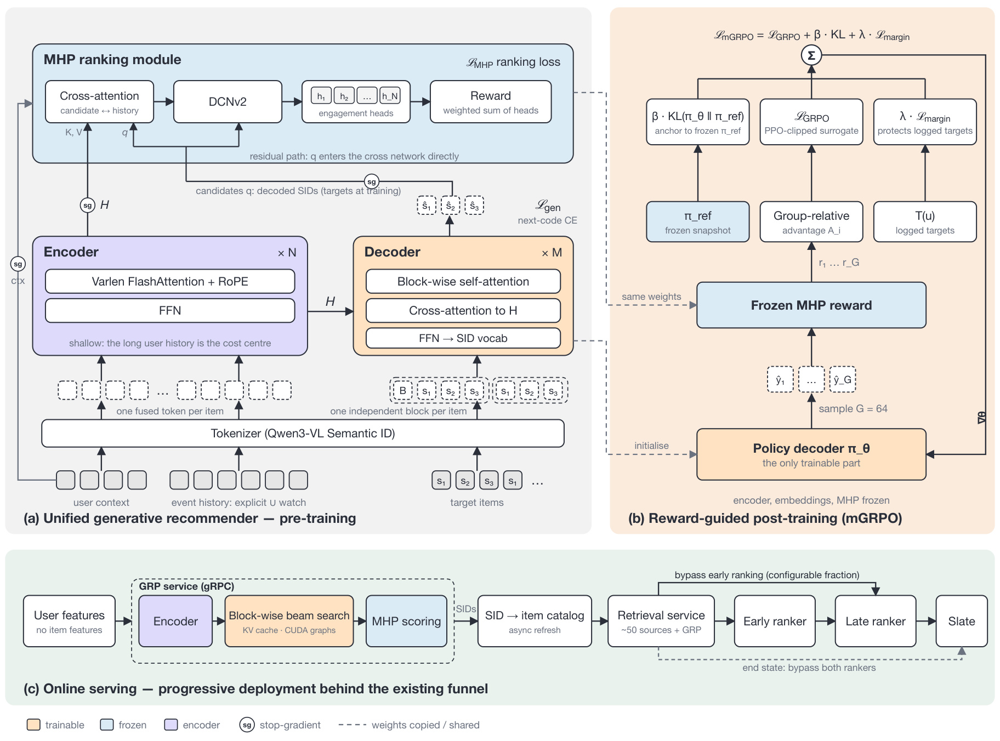
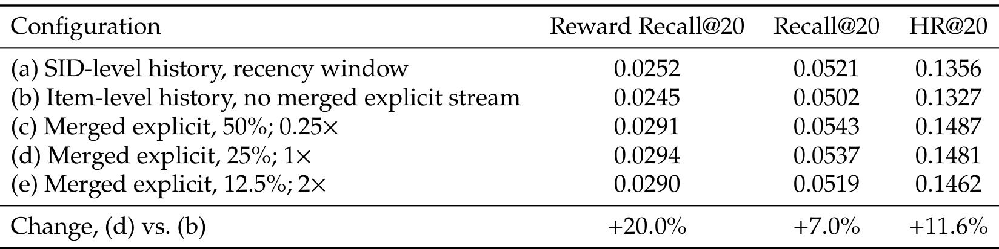
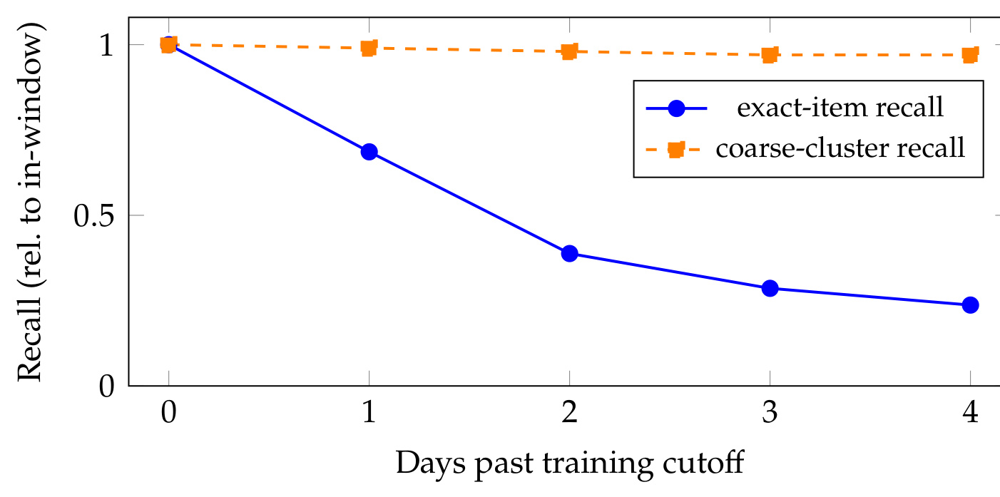
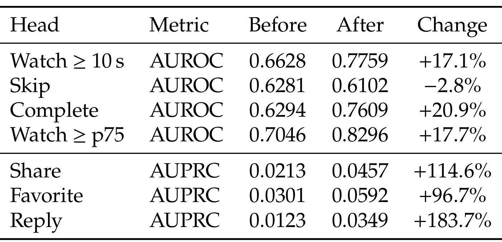
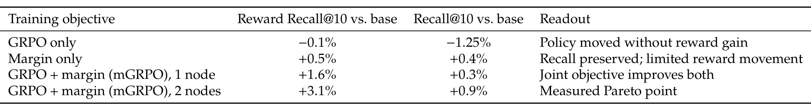
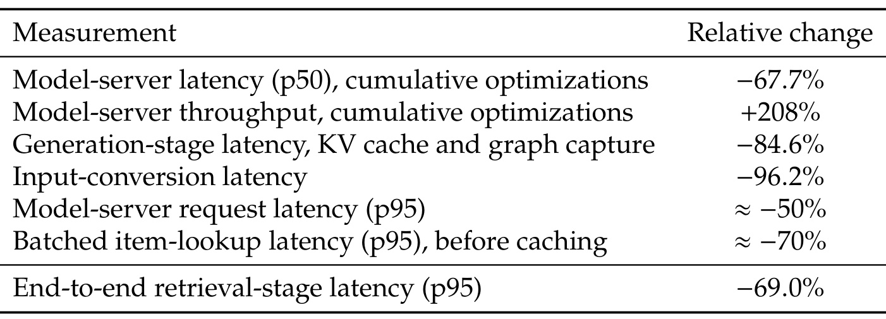
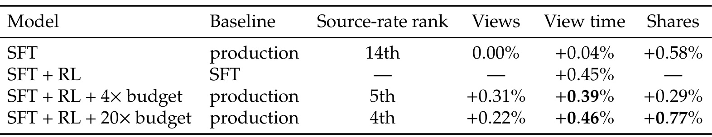
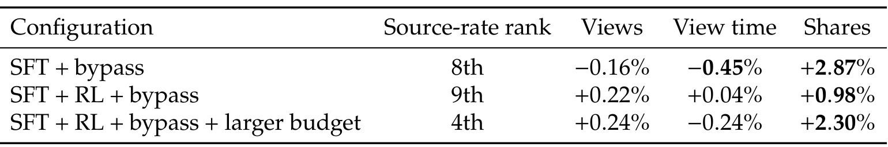
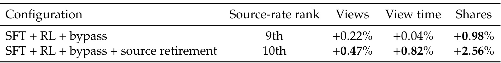

GRP v0.1 Technical Report：生成式推荐的渐进式生产迁移
Snap 的 GRP 团队在 2026 年 9 月 29 日公开这份技术报告，作者包括 Wenfeng Zhuo、Vincent Xue 等，完整贡献名单列于附录 A。论文将生成召回、候选排序和后训练奖励连接到同一个编码器—解码器模型，并用实际短视频线上实验检验逐步替换旧链路的可行性。论文原文。截至 2026 年 9 月 30 日，本轮未核验到本文独立代码入口；这不等于认定项目没有开源。
成熟级联系统积累了大量细粒度优化，裸生成器无法一并复现；一夜之间替换整条生产链路，会把这些能力的缺失误当成生成模型本身的不足。
1. 背景和问题
工业推荐通常把一次请求拆成多个阶段：不同召回源提供候选，早期排序压缩集合，后期排序结合更多特征估计价值，最后还有多样性、资格、时效性与展示约束。这种结构的复杂性是真实成本，但每层也沉淀了长期积累的业务能力。生成式推荐希望直接根据用户历史产生下一件物品的标识，因而有机会减少独立模型、特征工程和索引维护。然而，若只用一个生成器替换整条链路，实验结果同时受召回覆盖、精排能力、内容过滤和服务成熟度影响。出现负向后，很难判断应该改模型、补规则还是修部署。GRP 的出发点正是作者自身直接替换失败的经历；报告没有把早期失败藏起来，而是用它界定迁移实验需要回答的问题。
首先，生成出一个看起来合理的语义标识，并不等于已经给出了可靠的最终排序。语义标识把多模态内容压缩成若干离散码，同一码还可能对应多个具体视频。生成概率回答的是历史条件下这个码有多可能出现，观看时长、完播、分享、跳过等指标则各自带有不同的业务含义。用户经常看到的内容可能只因流量充足而易于预测，不代表它最值得再推荐。论文观察到，在生成候选之后继续使用现有排序模型，观看时长会明显改善。于是，一个声称统一召回与排序的模型，必须提供可比较、能校准、可作用于实际候选的价值分数，而不能把解码顺序直接等同于推荐价值顺序。
第二个障碍是内容池变化。短视频商品目录具有极快的新陈代谢，作者描述其观看内容池几乎逐日大幅更替。冻结模型在训练窗口之后的精确物品召回迅速下降，而粗粒度内容簇召回基本平稳。这一区分很重要：用户的广义兴趣可能仍被模型正确理解，但新视频对应的具体标识不在模型熟悉的概率区域里。即使强化学习成功调高了已有候选的价值，也无法凭空为训练截止后出现的物品补齐可靠表征。因此，需要把持续增量训练、内容编码和标识到物品的映射维护视作系统本身的一部分。把在线召回衰退笼统归因于用户兴趣漂移，会把真正的目录覆盖问题带到错误的优化方向。
第三个障碍是奖励能否区分同一用户的不同候选。一个排序头可能在日志测试集上看起来能预测互动，但实际只学到这个用户总体上爱不爱观看，而没有利用物品差异。传统监督训练每次接触已曝光目标，用户侧统计已经足以降低一部分损失；当生成器主动采样大量候选时，这种捷径就暴露出来。组内奖励几乎相同，即使标准化后的优势数值达到正负一，也不代表存在可靠的偏好信息。GRP 因此把奖励模型的候选敏感性当成后训练的前提，追踪候选信号在哪里被抹掉，再调整结构。这个诊断过程比简单更换强化学习算法更具有可迁移意义。
论文提出的渐进路径把上述问题分开测量。第一步，让 GRP 成为现有系统中的一个召回源，在同一用户与同一排序链路下和其他源比较；第二步，只替换它已经能够覆盖或胜出的较弱来源，并调整配额；第三步，让一部分候选按模型自带的分数跳过早期排序，最终才讨论能否绕过后期排序。每一步都能独立上线、回滚和定位不足，避免把“是否优于完整生产系统”压缩成一次全有全无的实验。本文实际仍处在这个渐进过程之中，后期排序对全部候选继续生效。标题中的版本号体现了作者对成熟度的保留，不能把它转述成已经完成端到端替代。
这种比较需要三层指标共同约束。短视频场景的观看次数、观看时长与分享次数衡量表面业务结果；日活和应用级互动等护栏避免局部优化损害整体体验；源级的最终曝光份额、排序通过率、完播与跳过等画像则用于解释模型在哪些环节被旧系统筛掉。源级名次是一种相对位置，可能因其他来源和实验臂配置变化而移动，不是绝对贡献的直接刻度。某个来源分享能力强，也可能在观看时长上弱于最好的专项来源。只有保留这些分解，才有依据决定继续扩大生成配额还是先修排序头，而不是用一个综合增益覆盖所有能力缺口。
从相关工作看，GRP 延续了 Semantic ID 生成式召回、编码器—解码器主干和偏好对齐路线。其区别主要在于，排序模块与生成模块在同一前向路径中训练，但梯度有意隔离；排序模块随后冻结并直接充当强化学习奖励，而不是另外构造一个外部偏好模型。与仅生成物品的检索器相比，它必须负责候选价值；与全链路替换方案相比，它把迁移控制与测量协议放到了同等重要的位置。论文没有通过引入极其复杂的新注意力结构来建立贡献，而是把输入历史、梯度边界、奖励可辨识性、概率保护和服务预算连接成一套相互约束的设计。
对工程读者，阅读时应始终区分三类对象：语义码、具体物品、真实曝光。离线命中率通常检查目标语义码是否位于前若干生成结果中，在线还需要查表得到一个或多个具体视频，再经过资格检查与保留的排序环节，最终才形成用户看到的列表。这些转换会改变内容分布和归因方式。离线奖励召回改善并不自动推出线上所有互动指标提升；服务延迟下降也不自动意味着整条信息流延迟同比下降。本文的价值在于提供了这些连接处的实验证据，同时也暴露出许多无法从公开报告独立复核的生产细节，例如绝对模型规模、流量规模和完整实验方差。读者应把这些缺口与已经观察到的收益同时保留。
2. 方法
2.1 渐进迁移与独立分块生成
GRP 用 Qwen3-VL 提取具有视频感知能力的多模态嵌入，经过 Matryoshka 截断降低存储与计算负担，再用残差量化变分自编码器生成三级语义码。各层码本大小递减，通过累计偏移共享同一张嵌入表，并添加分隔或起始符。除了重建与承诺损失，分词器还使用共同互动的对比目标，让相似用户共同消费的物品靠近；直通估计与量化后归一化用于缓解码本坍缩。这里的模型输入并非自然语言提示，而是用户上下文和事件序列。用户上下文结合通用用户嵌入、稠密及稀疏特征，再投影成少量上下文词元。历史中每件物品的多个语义码和辅助特征融合成一个编码器词元，而解码器仍逐个语义码生成。这让相同编码长度容纳更多物品，却没有取消输出码之间的层级依赖。

Figure 1 的左上区域描述预训练：浅编码器接收长用户历史，较深解码器根据编码结果产生目标物品的码序列；上方排序模块另行接收候选码、用户状态和历史表示。图中的停止梯度节点是理解“统一”的关键。共享特征和同一次前向并不意味着所有目标共同更新主干，排序损失不会沿这些输入返回编码器或嵌入表。候选查询除了参与交叉注意力，还直接进入特征交叉网络，所以即使注意力学习到近乎固定的历史汇聚，物品差异仍有路径进入预测头。右上区域把同一个排序模块变成冻结环境，只让策略解码器改变生成分布；参考模型提供相对概率约束，而日志目标提供保持真实行为覆盖的锚点。底部则展示这些模型能力如何连接已有漏斗：生成服务返回语义码和分数，异步目录把码转换为具体物品，部分候选可以绕过早期排序，但图中指向同时绕过两级排序的虚线是最终目标，不能当作当前已完成的部署。三块共同说明，GRP 并不是只在末尾加一个奖励损失，而是在训练、后训练、请求服务三个阶段分别划定参数、数据和控制边界。图内同样出现 KL 与 GRPO 的组合示意；下文以正文公式定义为准，完整 GRPO 损失已经包含 KL，最终目标不能再重复加一次。原图含多个分区，但它们属于同一个架构对象，箭头的共享权重与冻结关系需要连起来看。
显式行为与被动观看被分成两个历史流。收藏、分享、回复等高意图行为获得保护预算，剩余空间由观看流弹性填满。同一显式流内部不固定给每个类型相同数量，而根据用户自己的事件频次分配，并用次线性指数降低高频类型的垄断：
符号解释：$s_t$ 是显式事件类型 $t$ 的保留槽数，$n_t$ 是该用户相应事件的原始数量，$B_e$ 是显式事件保护预算，$f$ 是每类下限，$p$ 控制次线性压缩；总预算为 $B$，观看流填充剩余槽位。论文给出的是分配原则，未完整展开下限导致超额、某类样本不足时的边界处理，实际复现需要补查这些规则。每组内部按最近事件优先保留，因此保护稀有行为并不意味着放弃时效排序。
编码器用变长 FlashAttention 对打包历史计算，减少补齐位置成本。RoPE 只施加于编码器自注意力，解码器块内注意力和跨语义空间的交叉注意力都不使用它。每个目标物品形成独立因果块：块内后一级码依赖前级码，不同目标物品之间没有因果依赖。这样候选列表被作为一组独立预测对象，避免把历史状态过早广播到所有目标或束搜索分支；但它也没有直接学习列表级物品间的互补或多样性关系。监督生成损失是：
符号解释：$H$ 是编码器历史隐状态，$y_t$ 是当前目标语义码，$y^{\mathrm{blk}}_{<t}$ 只含同一物品块中此前的真实码，$\mathcal M$ 是有效内容码位置集合，分隔符与补齐位置不进入损失，$\theta$ 表示生成模型参数。训练使用教师强制，线上则根据此前生成的码继续解码，两种条件分布仍可能存在差异。
2.2 停止梯度的 MHP 排序与奖励
多头预测模块 MHP 将候选的层级码嵌入池化成查询，交叉关注编码后的用户历史，再把该结果、用户上下文以及候选查询本身拼接，输入 DCNv2 特征交叉网络和各自的小型预测头。候选、历史与用户上下文三路输入全部停止梯度，MHP 也不消费解码器输出状态。因此它既能评分生成候选，也能评分任意给定语义码，不依赖某条束搜索路径。监督训练看到日志目标，服务和强化学习则会看到生成候选，这个输入接口的一致性只解决了可调用性，并未消除候选分布偏移。候选残差路径专门防止交叉注意力把物品信息抹掉，配合网络宽度调整、按标签基率初始化输出偏置和截断分类 logit，改善罕见互动头的数值与区分能力。
符号解释：$\mathcal C$ 是完播、收藏、分享、跳过等二分类头集合，$\mathcal R$ 是对数观看时长等回归头集合，$\hat y_h$ 和 $y_h$ 分别为预测及有效标签；各头等权，BCE 与 MSE 分别为二元交叉熵和均方误差。总损失相加只是账面组织方式，生成梯度和排序梯度由于输入分离而作用于不同参数，不应把它称为排序监督端到端塑造生成主干。稠密矩阵使用 Muon，偏置和归一化等一维参数使用 Lamb，稀疏表由单独行级自适应优化器处理；这些实现组合与混合精度共同支持吞吐，但不是后训练改进的单一解释。
符号解释：$r$ 为候选标量奖励，$w_h$ 为固定业务权重，$\phi_h$ 将预测转换成服务价值，例如分类头用 sigmoid，对数时长头用指数映射。公式允许多目标混合，报告中对应线上强化学习比较实际只使用观看时长头；不能把公式的一般性误读为已经验证了所有互动目标同时优化。模型冻结后评分不带梯度，奖励校准误差会通过采样与优势估计间接影响策略，因此监控输出是否真实区分同一用户的候选，比只看总体分类分数更接近后训练所需能力。
2.3 冻结奖励下的 mGRPO 后训练
后训练冻结编码器、稀疏和语义码嵌入、相关归一化状态及整个 MHP，更新解码器栈、其输入 LayerNorm 和输出投影，关闭解码器 dropout 以便比较策略概率。每个用户上下文从当前策略温度采样一组候选，而不是使用线上束搜索；记录采样行为概率，冻结奖励对候选打分，组内标准化构造优势。参考模型是后训练起点的解码器快照，冻结共享部分无需复制，因此内存开销也区别于复制整套推荐系统。
符号解释：$u$ 为编码后的用户上下文，$\mathcal G$ 是该用户采样组，$r_i$ 是候选奖励，$\mu_{\mathcal G}$ 与 $\sigma_{\mathcal G}$ 是组内均值和标准差，$\delta$ 防止除零，$P_\theta$ 是整件物品内容码概率的乘积，$\theta_{\mathrm{old}}$ 是产生样本时的行为策略。比率在物品层面计算，不能直接用某一个码的概率代替整件物品的概率。
符号解释：$G$ 是组大小，$\epsilon$ 是 PPO 裁剪范围，$\beta$ 控制与参考策略 $\pi_{\mathrm{ref}}$ 的 KL 距离；KL 按有效词元、完整语义码词表计算解析值，再做平均。剪切控制单次更新幅度，KL 控制整体分布漂移，但二者都不特别关心真实日志目标的竞争地位，因此仍可能把概率移到奖励模型喜欢、真实行为却缺少支撑的区域。
mGRPO 额外比较每个真实目标与采样组中最有概率候选之间的差距，而且分别在当前策略和参考策略下计算：
符号解释：$y$ 是日志记录的有效目标物品，$\mathcal G(u)$ 为当前采样候选集合，$m_x$ 为相应模型下的对数概率竞争间隔。这里的“最好候选”按照概率取最大值，不是简单选择奖励最高的一项；两个模型对同一采样集合分别计算自己的最大概率项，胜出项不一定相同。
符号解释：$\mathcal T(u)$ 是有效日志目标集合，$[z]_+=\max(z,0)$，$\lambda$ 为间隔惩罚权重。只有当前策略让真实目标的相对竞争位置比参考模型更差时，惩罚才激活；若位置未恶化，则允许奖励继续改善。这是一项有限采样上的软约束，不是保证目标绝对概率不降的硬条件，也不是任意线上候选集召回不降的数学保证。目标和竞争候选的绝对概率可以一起移动，而且惩罚强度有限，最终是否保持召回必须由实验检验。它比全面加入监督似然更有针对性，因为只修正可能侵蚀日志目标的方向。
2.4 低延迟推理与新鲜内容映射
线上产物只保留稠密权重和嵌入表，去除优化器等训练状态。请求携带用户侧特征，服务先编码历史，再做独立分块束搜索，必要时在粗粒度码层控制多样性，最后由 MHP 给候选逐头评分。生成设置相同的请求动态分组批处理。返回语义码还不等于可展示物品，异步更新的反向目录把新内容的编码关系维护到键值存储，查询时一次批量取回候选物品集合，再做质量与资格过滤。持续训练解决生成模型对新内容的适应，目录刷新解决码到当前物品的解析，两者承担不同职责，不能把异步查表写成冻结模型的全部时效性解决方案。
服务优化同时发生在调用端和模型端：调用端先按模型实际预算截断事件负载，重写展平特征逻辑，把逐码点查改为批量查表；模型端将主要特征预处理从 Python 改为 C++，对解码使用 KV 缓存与 CUDA 图，并调整 RPC 工作进程和批量大小。缓存减少重复状态计算，图捕获减少调度开销，输入转换和查表则属于模型矩阵计算之外的耗时。能否扩大解码预算取决于它们共同释放的延迟空间。即便服务已提供绕过排序的控制开关，实际应放行多少候选仍由排序质量和线上实验决定，基础设施可支持某种路径不等于模型已具备安全替换该路径的能力。
3. 实验结果
3.1 历史预算、行为选择与目录时效性
离线实验使用生产短视频场景的用户会话，评估日期在训练之后，分别衡量目标语义码命中率、真实互动集合召回及奖励加权召回。各组比较有自己的基线，不能把不同表的数值直接拼成单条提升链。Table 1 在相同编码词元预算下，将每件物品四个位置改成一个融合位置，历史物品数量扩大四倍：HR@10 从 0.1734 到 0.1764，相对增加 1.73%，训练吞吐从每秒 0.58 步到 0.57 步，基本持平；继续翻倍历史时 HR@10 为 0.1751，吞吐降到 0.32，展示了长历史并非免费。Table 2 固定总深度，将编码器与解码器层数比从 2:1 经 1:1 改到 1:2，吞吐为 0.57、0.63、0.69 步每秒，最终相对增加 21.05%，HR@20 从 0.2293 到 0.2332。长序列编码昂贵、短码解码便宜，因此参数位置比单纯加层更影响成本质量关系。

Table 3 把七天训练数据上的事件选择单独拆开，其第一步与此前四倍历史实验不同：只做物品级融合、仍然依赖观看流时，奖励召回从 0.0252 降到 0.0245，普通召回从 0.0521 降到 0.0502，HR@20 也从 0.1356 降到 0.1327。这不是无关紧要的反例，它说明压缩释放的序列空间如果继续被被动观看占满，并不会自动增加高价值信息。真正明显的变化出现在显式事件合流并获得保护配额之后。总预算取参考值、其中四分之一留给显式事件时，奖励召回达到 0.0294，相对物品级无合流基线增加百分之二十；普通召回为 0.0537，相对增加百分之七；命中率达到 0.1481，相对增加百分之十一点六。奖励加权收益更大，符合稀有高意图行为携带价值信号的动机，但不是证明每一种显式动作都同样有效。表中更短历史配置以一半比例保留显式事件也已接近最优，而总预算继续翻倍、显式比例降至八分之一时结果略降。这里总长度和显式比例一起变化，读者不宜将下降完全归因于其中单一因素。作者检查了窗口利用率与最近事件保留，提出容量不足的解释；这仍是待更大模型实验检验的归因，而不是已经证明的统一规律。迁移时应同时保留行为构成和长度两根坐标，否则只展示可容纳的历史数量，会漏掉决定增益的采样政策。
Table 4 则在匹配模型、码本预算和评估的条件下更换分词器。MM-SID 到 Qwen3-VL SID，Recall@20 为 0.0529→0.0592，奖励召回为 0.0398→0.0439，HR@20 为 0.1563→0.1717，对应相对增益 11.9%、10.3%、9.9%。论文将其联系到视频语义、共同互动对比学习和更均匀码本使用，也指出精确码元组空间改变后目标匹配本身更严格。因此这是分词器整套替换的结果，无法从该表单独识别视觉模型、码本层级和对比目标各自贡献。读者应关注可解析到多少独立物品，而不是把码空间增大本身当作推荐有效性的证明。

Figure 3 的横轴是距离训练截止的天数，纵轴是相对训练窗口内的归一化召回；蓝线表示精确物品，橙色虚线表示粗内容簇。蓝线在几天内明显下滑，橙线基本平稳，支持“知道用户想看哪类内容，却不能准确召回最新具体视频”的判断。由于纵轴做了归一化，这张图不能读成绝对召回从百分之一百下降到某个绝对水平，原图没有给出每一天精确原始数值，笔记也不把视觉估读当成实验数字。两条线的分叉把模型对用户兴趣的理解与目录新鲜度覆盖区分开来：如果只有蓝线，会误以为整个表征快速失效；加入橙线才看到粗偏好仍具有稳定性。相应干预也应分层，持续增量训练把新物品纳入模型可生成的分布，异步目录更新则让已生成的码能够解析到当前可用内容。奖励后训练只是在模型可表达的候选范围内重新分配概率，不足以补出所有截止后才出现的物品知识。这个实验还限制了离线强化学习结果的外推窗口：在未来日期评估时，应检查内容年龄、码覆盖和解析失败率，不能将时间窗口内的奖励召回提升直接当作多天后的稳定线上增益。公开图只展示一种短视频更新环境，长尾商品或音乐目录的变化速度可能不同，衰减曲线需要在目标业务重新测量。图中观察期只有四天，也不足以拟合长期衰减定律或据此决定固定重训周期，真实调度还要结合新内容进入速率和训练延迟。
3.2 候选敏感性与 mGRPO 的两个必要条件
最初的奖励在同一请求不同候选之间仅变化其量级的 0.005%–0.16%，单头变化也只有 0.3%–2.3%。作者逐层追踪发现，查询偏置比候选投影大三个数量级，交叉注意力几乎成了固定的历史选择器。奖励总体上仍可拟合用户互动倾向，但对当前采样组缺少排序信息。因此下面的改造同时涉及候选残差路径、交叉网络及预测头容量、基率初始化和分类数值截断；并不是只改一条残差连接的严格单因素实验。

Table 5 在相同留出集合上比较改造前后，并把高频头与罕见头使用的指标分开。观看至少十秒的 AUROC 从 0.6628 到 0.7759，完播从 0.6294 到 0.7609，相对时长阈值头从 0.7046 到 0.8296；这三项绝对增加约零点一一到零点一三，不能写成同样数值的相对百分比。稀疏动作的 AUPRC 分别为分享 0.0213→0.0457、收藏 0.0301→0.0592、回复 0.0123→0.0349，相对增加接近一倍到近两倍，但绝对值依然较低。低基率事件上的倍数很显眼，若忽略原始水平，会高估奖励对生成长尾候选的可靠性。跳过头是明确的负向：AUROC 从 0.6281 降至 0.6102，作者认为可能包含噪声，公开报告没有提供足以独立判定该变化显著性的方差。生成召回几乎不变也有机制意义，Recall@20 只增 0.0004，奖励召回只增 0.0001，符合停止梯度使排序结构不会改动解码主干的设计。改造后组内奖励分散程度的中位数超过奖励量级的百分之二百，说明候选差异重新进入信号，但分散本身不是正确性的保证，还需与真实互动校准。该表验证了奖励具备更强的识别能力，尚未证明它已达到生产精排水平，也未证明所有头一起用于强化学习会得到更好的多目标结果。

Table 6 进一步问，在奖励已经能区分候选后，为什么普通 GRPO 仍不够。只使用 GRPO 时，奖励召回相对基线下降 0.1%，普通召回下降 1.25%；这表明策略确实发生移动，却既没有获得更高奖励召回，又损害了日志覆盖。单独加入间隔目标时，奖励召回增加 0.5%、召回增加 0.4%，主要表现为维持行为锚点，向高价值方向移动有限。联合目标在单节点时获得奖励召回增加 1.6%、召回增加 0.3%，说明奖励驱动与保护方向在这组数据上具有互补性。双节点进一步达到增加 3.1% 与 0.9%，作者明确把额外收益联系到更多有效训练数据，因此不能把单节点到双节点差异全部算作损失函数的算法收益。表中的变化是相对基模型的百分比，不能按绝对百分点解释，更不能与不同候选数、不同数据窗口的其他表直接相加。有限的消融证据支持“只奖励可能漂移、只保护移动不够、联合目标形成更好折中”，但不能推出间隔项在所有数据分布下保证召回不下降。它约束的是采样集里的相对对数概率，实际取前若干候选还受未采样物品、束搜索和目录碰撞影响。特别是所有候选奖励都存在系统偏差时，保持日志目标竞争力并不能校准奖励本身，因此 Table 5 的信号诊断和本表的目标约束是两个不同层次的必要检查。复现应同时绘制奖励、普通召回和目标竞争间隔，而不只监控训练回报。
3.3 服务提速的测量边界
模型训练后的计算图只占生产请求的一部分。论文先对请求编排和模型服务器分别剖析，发现历史载荷、事件格式转换和码反向查询同样重要。事件上限使请求体 p99 大小减少约 67%–75%；重写展平逻辑使对应转换耗时下降约 96%；批量读取代替逐码查询使查表 p95 在缓存之前下降约 70%。这些变化说明，在宣称生成模型推理昂贵之前，应先确认耗时是否真的由解码矩阵乘法主导。

Table 7 的最后一行是最适合概括系统收益的边界：端到端检索阶段 p95 延迟下降 69.0%。其中“端到端”修饰的是检索阶段，不包括用户请求后面全部早排、精排、重排和展示环节。上方各行测量对象不同：模型服务器 p50 累计下降 67.7%，吞吐相对增加 208%，生成阶段因 KV 缓存与图捕获下降 84.6%，输入转换下降 96.2%，模型服务器请求 p95 约下降一半，批量物品查询 p95 在缓存之前约下降七成。它们不能直接相加，也不能把某个阶段的百分比乘到全链路基线得到总时延，因为阶段占比、排队时间、分位数和并发配置都不同。吞吐增加百分之二百零八意味着相对原值达到约三点零八倍，而不是仅达到二点零八倍；但这个数仍属于论文评估配置，缺少绝对请求速率与硬件细节时不能据此估算别的系统容量。模型端还报告 C++ 预处理替换使该部分减少约百分之三十七，两个工作进程配合批量大小八改善 RPC 尾延迟，这些并发选择也说明纯模型微基准难以解释全部改善。服务优化释放的预算随后用于更多候选解码，因而线上收益与工程成本相互关联：增加预算可能提高观看时长，也消耗刚释放的计算空间。部署决策应比较同等资源和延迟约束下的业务曲线，不能只分别引用最快配置的效率与最大预算配置的效果，组合成一台不存在的系统。
3.4 三条线上比较轴及不能相加的收益
线上均为真实短视频场景，护栏包括日活和应用级互动；论文按百分之九十五置信水平判断，表中粗体表示检验的 $p<0.05$。公开报告未给出全部实验样本量、持续天数和置信区间，因此本文能复核表格含义与显著性标记，不能独立重算统计检验。三个比较轴是并行探索的配置开关，而不是可以连续相加的升级阶段。

Table 8 首先固定下游排序链路，看 GRP 作为额外召回源能产生什么变化。监督模型相对生产系统的观看次数为 0.00%、观看时长增加 0.04%、分享增加 0.58%，这些都不显著，最终曝光份额名次为第十四。强化学习那一行的基线却是同服务配置的监督模型，观看时长增加 0.45%，并没有同时报告观看次数与分享，因此不能把空白看作零，也不能将其当作对生产系统增加同样比例。把后训练和四倍解码预算一起与生产系统比较，观看时长增加 0.39%，其检验值为 0.031；观看次数增加 0.31%，检验值为 0.091，未达到该显著性门槛。预算继续增至二十倍时，时长增加 0.46%、分享增加 0.77%且显著，观看次数增加 0.22%未标显著。这个结果说明生成候选数量仍有价值，但二十倍预算不是免费增强，应结合服务优化和资源占用判断成本。源名次从第十四向第五、第四变化，体现候选通过现有排序的竞争力，却不能等同于模型已超过所有排序器。保留排序器时，它们仍在筛选和纠偏，线上收益是生成候选与现有系统共同作用的结果。该表最能支持的结论是，在原漏斗内，奖励对齐和更大生成预算能改善部分业务指标；它没有证明在相同算力下已经完成全链路最优替代，也不支持把时长、分享和观看次数写成全部稳定提升。
Table 9 从源画像补充这种差异：在早排旁路配置中，相对同一实验臂内的全来源平均，GRP 平均观看时长增加 4.9%，但名次只是第十二；完播比增加 14.6%，名次第二；跳过率降低 10.1%，名次第十；收藏率增加 9.2%，名次第九；发送率增加 34.9%，名次第二。排名只计归因观察份额至少 1% 且指标可定义的来源，表中估计可能重复归因已观看物品。高于平均并非胜过最强来源，发送与分享的不同度量也不宜随意互换。它提示生成器在完成消费与传播上有优势，在时长和避免跳过上仍依赖其他专项来源。

Table 10 改变的是早期排序是否继续筛选部分 GRP 候选，比较基线均为生产系统。监督模型直接旁路时，源名次升至第八，分享增加 2.87%，但观看时长下降 0.45%，两者均显著。这一组合明确否定“更大生成曝光一定更好”的想法：候选可能更易传播，却牺牲了消费时长。使用后训练模型再旁路，时长为增加 0.04%、分享增加 0.98%，作者把整体解释为满足中性门槛，不能将小幅正数宣传成确定增益。继续扩大解码预算时，曝光名次到第四，但时长点估计为下降 0.24%，检验值 0.177，并不显著；分享点估计增加 2.30%。这既不能被写成显著时长损失，也不能因为不显著就断言真实效应恰好为零。与上一张表相比，增加预算在保持排序器时改善时长，在旁路情况下却没有相同的正向结果，说明解码预算和排序质量存在交互，不能单独沿一个旋钮不断放大。作者设置旁路实验的验收目标是扩大自身承担的流量、同时保持顶层中性，因为它主动移除了一部分成熟排序能力。它是系统迁移的中间验收标准，和单纯召回源实验追求业务增益不是同一个问题。更关键的是，所有候选仍然经过后期排序，因而这些结果没有测试最终去掉精排之后是否仍能保持中性。部署时应记录旁路比例及被旁路候选分布，否则相同“使用 GRP”的名称可能对应完全不同的风险和实际贡献。

Table 11 在后训练加早排旁路基础上，进一步退役一部分表现较弱的现有召回源，将配额重新分配。该联合配置相对生产系统，观看次数增加 0.47%、观看时长增加 0.82%、分享增加 2.56%，三项均显著，报告中的平台级护栏保持中性。这个结果是本文最直接的线上正向证据，但其归因对象是“生成模型、旁路和来源替换”的组合，不是单独 mGRPO 这一项损失。基准旁路配置同样列在表中，帮助说明没有来源退役时点估计更小；然而不同实验臂的内容来源构成和归因份额会变化，不能把两行相减就当作独立随机试验中的精确增量因果效应，更不能再加上 Table 8 对监督模型的 0.45%。源份额名次从第九变为第十，作者明确提醒这些排名在各自实验臂内部计算，不能据此断言模型获得的绝对流量减少，也不能说来源替换已经证实其份额持续扩大。内容组成变化本来就是退役某些来源会带来的机制之一，业务指标改善说明这组替换在评估中有效，却不意味着所有辅助来源都可移除。尤其是探索、新鲜度和罕见兴趣覆盖，可能不完全反映在这三项平均指标中。报告最终仍保留专项来源，并承认奖励头与生产排序器存在差距。合理理解是逐个替换已经被证据证明较弱的组件，继续用护栏与分来源指标判断下一步，而不是从一次正向组合实验跳跃到完整级联已经过时的结论。
4. 总结
GRP 的核心经验是把生成式推荐的“统一”拆成可核验的职责：生成主干产生候选，梯度隔离的 MHP 为候选提供可服务的价值估计，冻结的同一模块为解码器后训练提供奖励，渐进控制协议决定哪些原有环节可以被替换。它最有说服力的部分不是把多个收益数字堆在一起，而是保留了失败链条：更多历史可能无效，奖励可能看不见物品，普通强化学习可能损失召回，直接旁路早排可能损害观看时长。这些负向结果让后续设计不只是经验配方，而能对应到较清楚的故障机制。对于推荐工程，先确认奖励真的排序了同一用户的候选，再讨论如何最大化奖励，是比直接升级策略优化算法更稳固的起点。
可迁移的另一点是把压缩与选择分开。物品级历史融合节省编码位置，保护显式动作改变信息组成，浅编码深解码改变容量位置，三者解决的是不同瓶颈。用更长上下文替代合理采样，很可能让被动行为继续淹没高意图信号；用更大模型替代目录更新，也可能仍无法生成最新内容。对于大模型个性化记忆或检索增强任务，同样可以测试不同事件来源是否被容量大的日志流稀释，以及奖励是否只预测用户总体倾向。不过这些属于基于本文机制的迁移设想，报告没有对通用语言模型、知识检索或对话任务提供直接实验。
必须保留四方面限制。第一，训练数据和线上流量来自单一生产短视频环境，代码、完整数据切分与多数规模细节未公开核验，外部难以复现实验方差与绝对服务成本。第二，MHP 稀有头虽有明显相对提升，AUPRC 绝对值仍低，且跳过头退步；把它用于多目标奖励可能放大已有预测偏差，观看时长单目标的成功不能直接推广。第三，后训练采样与线上束搜索不同，间隔项保护的是有限采样下的日志竞争位置，分布外目录、概率校准和列表多样性仍可能出现问题。第四，线上仍保留后期排序，旁路仅覆盖部分候选，二十倍解码预算的收益也伴随资源代价，不能把“统一模型接口”理解为整套生产系统已经简化到只有一个模型。
后续最值得做的第一项验证，是在自己的日志上构造同一用户不同候选的诊断集合，比较有无候选残差时奖励排序、校准和生成分布外表现，特别关注高分但缺少真实行为支持的候选。第二项是复现后训练的二维消融：同时记录普通召回、奖励召回、目标竞争间隔和 KL，让普通 GRPO、单独保护及联合目标在相同数据量下比较；额外训练规模应另列，避免误认作算法增益。第三项是进行严格时间外推，把内容年龄、语义码解析率和新物品覆盖分层，比较持续训练与目录刷新各自解决的问题。这些验证比仅复现一个总体命中率更接近文章试图解决的生产障碍。
最后，迁移实验应建立独立的成本账和效果账。召回源接入、早排旁路、来源退役必须分别定义对照，分位数延迟、吞吐、解码预算和业务增益也应绑定同一配置。对于准备采用这一路线的团队，先让生成器在现有漏斗里获得可比较的位置，再用来源画像决定哪里替换、哪里保留，是本文有证据支持的实践方向；是否最终取消后期排序，仍要等更强的候选价值建模和新的线上结果。本文证明的是渐进部署能取得可观测进展，并同时识别未解决的差距，而不是给生成式推荐的全量替代写下终局结论。